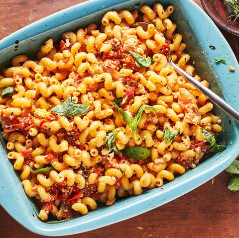

Baked Feta Pasta

Description
Try the newest TikTok recipe!
Simple and easy to cook, this dish will surely impress your friends.
Ingredients
- 2 pt. cherry or grape tomatoes
- 1 shallot, quartered
- 3 cloves garlic, smashed
- 1/2 c. extra-virgin olive oil, divided
- Kosher salt
- Pinch crushed red pepper flakes
- 1 (8-oz.) block feta
- 3 sprigs fresh thyme
- 10 oz. pasta
- Zest of 1 lemon (optional)
- Fresh basil, for garnish
Steps
- Preheat oven to 400°. In a large ovenproof skillet or medium baking dish, combine tomatoes, shallot, garlic, and all but 1 tablespoon oil. Season with salt and red pepper flakes and toss to combine.
- Place feta into center of tomato mixture and drizzle with remaining 1 tablespoon oil. Scatter thyme sprigs over tomatoes. Bake for 40 to 45 minutes, until tomatoes are bursting and feta is golden on top.
- Meanwhile, in a large pot of boiling salted water, cook pasta until al dente according to package directions. Reserve ½ cup pasta water before draining
- To skillet with tomatoes and feta, add cooked pasta, reserved pasta water, and lemon zest (if using) and stir until combined. Garnish with basil.
Go back